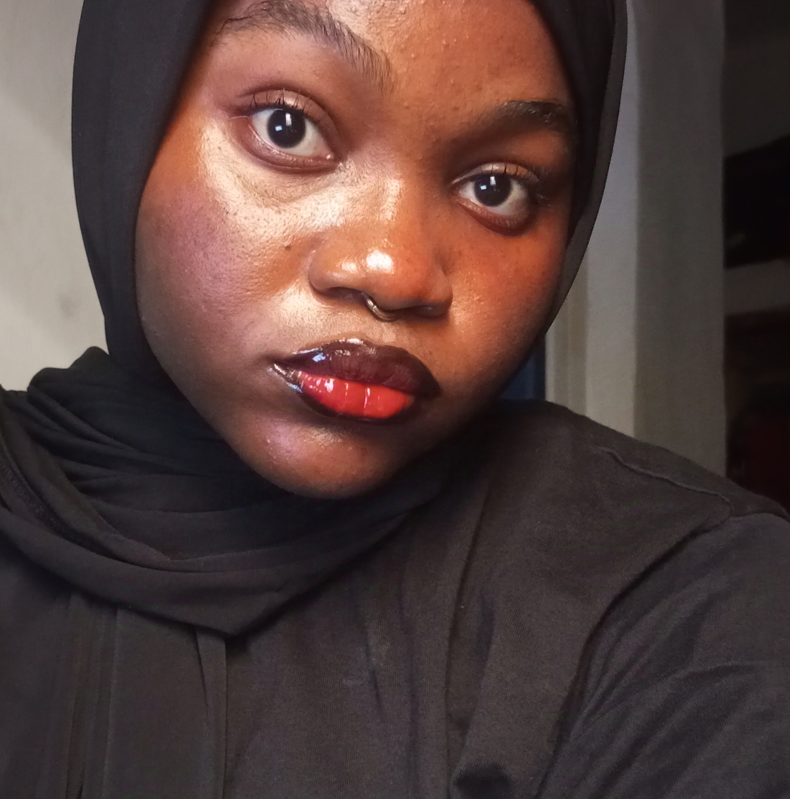

Hey, I am Zainab Tairu.
Machine Learning Engineer | NLP Engineer | Polymer informatics | Ethical AI
About Me
I’m a machine learning engineer focused on NLP and speech technologies. I design AI-driven systems that support decision-making and automation across industries.
With a background in chemical engineering, I also explore how machine learning helps understand molecular systems in materials. My research explores this through enzymes and more recently through polymers, where I use ML to study structure–property relationships and material behavior.
Beyond technical work, I'm a very curious person, so I enjoy exploring connections between AI, science, and food, and I document my thoughts and discoveries on Medium.
Publications
In preparation
WiML @ NeurIPS 2026
Accepted
NoiseLens: Evaluating Denoising for Diagnostic Information Preservation in Breast Ultrasound Imaging
On the Theoretical Limits of Post-Hoc Explanation Faithfulness
LoResLM @ EACL 2026
Published
Blog
October 2026
- Awarded over $2,000 in travel funding from Women in Machine Learning (WiML) to attend NeurIPS 2026 in Sydney, Australia, and present my research poster.
- Earned my Basic Offshore Safety Induction and Emergency Training (BOSIET) certification.
September 2026
- Visited an offshore oil rig and observed an upper completion operation, gaining firsthand insight into well completion activities and offshore production operations.
August 2026
- Attended the Nigeria Annual International Conference and Exhibition (NAICE 2026).
- Volunteered at and attended Deep Learning Indaba 2026.
June 2026
- Visited Heirs Energies (Agbada 2), NAG, and AGG, to gain exposure to upstream facilities, operational activities, and energy industry practices.
May 2026
- Joined NNPC Upstream Investment Management Services as a Process Intern.
April 2026
- Joined Karimi Talent to support research and information management.
February 2026
- Presented our paper, Evaluating Retrieval-Augmented Generation for Medication Question Answering on Nigerian Drug Labels in Yorùbá, at the LoResLM workshop at EACL 2026.
January 2026
- Our paper, Evaluating Retrieval-Augmented Generation for Medication Question Answering on Nigerian Drug Labels in Yorùbá, was accepted to the LoResLM workshop at EACL 2026.
November 2025
- Appointed Lead of the Data Science Nigeria OAU chapter, where I coordinate community activities, mentor members, and promote data science engagement and initiatives within the university.
October 2025
- Joined NNPC Upstream Investment Management Services as an intern, gaining practical exposure to upstream operations, data analysis, and strategic investment planning in the energy sector.
Articles

How Artificial Intelligence is Influencing MOF Discovery
An exploration of how machine learning is transforming the way we design MOFs.
Resume
Download my resume to learn more about my professional experience and qualifications.
Resume